Overview
Total Annual Exemptions Processed
| Type |
2017 |
2018 |
2019 |
| Homeowner |
1,321,760 |
|
|
| Senior |
295,075 |
|
|
| Senior Freeze |
159,757 |
|
|
| Disabled Persons |
15,768 |
|
|
| Returning Veteran |
107 |
|
|
| Disabled Veteran |
4,997 |
|
|
| Longtime |
2,463 |
|
|
| No File |
62,117 |
|
|
Property Tax Exemptions 101
The Assessor’s Office processes seven types of property tax exemptions.
- Senior (a.k.a. “homestead”) – processed in the mainframe (MF);
- A Senior “Prime” Application refers to a first time applicant.
- If it is not a “prime” application, then it a “renewal.”
- Renewals are processed on the AS400.
- Senior Freeze – processed in the AS400;
- Disabled person – processed in the AS400;
- Disabled veteran – processed in the AS400
- For three categories of disabled veterans:
- 70% disability or greater
- 50 to 69% disabled
- 30 to 49% disabled
- Returning veteran – processed in the AS400;
- Homeowner – processed in the AS400;
- Co-ops and prorated parcel exemptions are uniquely calculated
- Long-time homeowner (or Long Term Occupant) – processed in the AS400;
Other
- Disabled Veteran Homestead
- Processed by the State but reviewed by the Assessor’s Office Legal Department
- Legal Dept. keys the data into the AS400.
- Sunset exemptions
- Expired in 2014 and will likely be out of scope for the IPTS implementation.
Order of Operations for Exemption Deductions
- Senior Freeze
- Homeowner
- Homestead non-Coop
- Veteran
- Homestead Coop
- Disabled Person
- Disabled Veteran < 75%
- Disabled Veteran > 74%
- Returning Veteran
Note: Given limitations of the mainframe, exemption applications are grouped in batches. In practice, the initial entry of Senior and Senior Freeze Exemptions uses batch numbers 000001 to 000005; one batch per branch including downtown.
Senior renewals are captured in the AS400 and thus batch in a simpler manner, in sets of 100 records, each group of 100 gets its own batch number (to make it easier to search and retrieve). The County requires the elimination of these limitations.
While some exemptions are captured and processed in the AS400, all exemption information is subsequently uploaded to the mainframe. Assessor’s Office does not apply exemption amounts directly, but rather to the equalized assessed value (EAV) after this has been determined by the Illinois State Department of Revenue.
Abstract System Map
(S. Eifert 8/16/2016)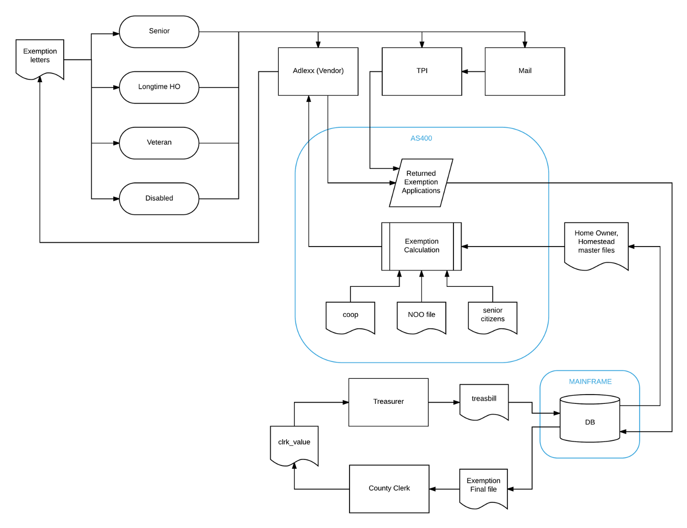
Changes for Tax Year 2019
Updates to Forms and Processes for 2020 Intake Period
| 2019 |
2020 |
| “Senior Citizens Exemption” |
Renamed Senior Exemption |
| “Disabled Veterans Exemption” |
Renamed Veterans with Disabilities Exemption |
| “Disabled Persons Exemption” |
Renamed Persons with Disabilities Exemption |
| No exemption applications were available online. |
Homeowner, Senior, and Senior Freeze are online. They are linked on each exemption’s web page. |
| Exemptions: accept/reject via the mail. |
For online applicants, notification via email. |
| Taxpayers with leases applied for exemptions via Certificates of Error. |
Can apply for current tax year (must see a manager). |
| Occupancy Affidavit: attestation by someone other than applicant. |
Applicant now attests to their own occupancy of the property. |
| Homeowner and Senior Exemptions were on the same form. |
These exemptions are now on separate forms, as they have different eligibility and document requirements. |
| Listed accepted ID documents: drivers license, state ID. |
Lists are greatly expanded to match eligibility requirements for ID, occupancy, and taxpayer status. |
| Must renew Senior Exemption every year. |
Now the Senior Exemption is renewed automatically. |
| Didn’t ask for last 4 of SSN. |
Senior and Senior Freeze forms request (optional) the last 4 of SSN. |
| Mailers: Two senior-related mailers: purple “full” booklet for deed changes (Homeowner, Senior, Freeze) and the blue “senior renewal” booklet that included the Senior and Freeze. |
This “Senior” group was broken into 3 categories. Blue mailer: modified to just renew the Freeze. Gold mailer: new. Is the “full booklet” renewal mailed to prior recipients of the Senior who may be deceased. Postcard: new. Confirms Homeowner and Senior auto-renewal so that no action is necessary. |
Resources for taxpayers
- Link directly to https://www.cookcountyassessor.com/exemptions
- Site contains a brief overview of all exemptions, with links to each one
- Lists the documents required with application
- Printable PDF applications and online submission available when possible.
- It has important notes for anyone applying for exemptions
Eight Steps of Exemption Administration
Interdepartmental Collaboration & Process Flow

Schedule & Relationship Dependencies
Gantt Chart
The Chart below focuses on the period following application intake in which meeting deadlines is critical, due to the way each step is dependent upon completion of the prior steps. Many of the other tasks in the administration process can be and usually are completed in varied order.
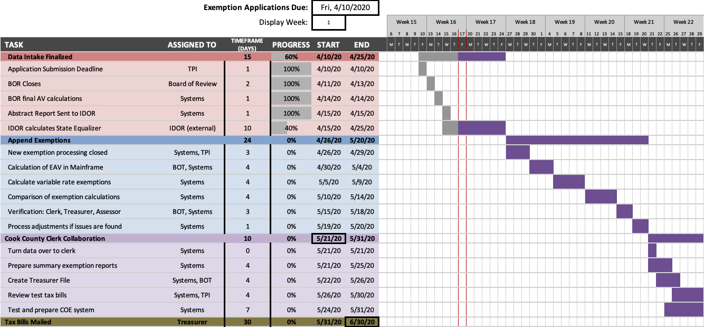
1. Generate Master File
| Departments Involved |
Programs &
Technology Employed |
| Bureau of Technology (BOT) |
Mainframe |
| Taxpayer Information (TPI) |
Homestead Update Interface (HUPD) |
| Data Science |
AS400 |
| Legacy Systems |
|
Description
Generates list of taxpayers who are likely eligible for exemptions (“Master File”).
These will be informed of their eligibility, status and the next steps to take to receive their exemption.
Details
1.1. Create a copy of last year’s Master File for use in current tax year
- Backup prior year HUPD file
- The file is updated nightly with assessment and exemption information from Board of Review data sets.
- PTI: Change the nightly back up (new file scheduler)
- BOT: Enable HUPD transactions on Mainframe
- HUPD is a program that interfaces directly with the Mainframe
- TPI can use it to update the records directly
- HUPD is technically a noun, but is often used as a verb as jargon for “use the HUPD to access the Mainframe”
-
Associated files, programs & naming conventions
- Conversion program:
TRIPT761
- Panvalet record description:
ASREASRDU3
- Run-A-job:
TRIPT63T
- FTP file name example:
AS.REA.ASMTMSTR-MF-120817.TXT
-
Data dictionary & documentation
- as.rea.asmtmstr.csv
- NB: each field is interspersed with a ‘|’ delimiter, omitted here.
- Original (S. Pham 2017)
- The Assessor property master is a VSAM file that has detail segment data for all Cook County properties: land data, improvement data and questionnaire data.
- Virtual Storage Access Method, IBM data structure circa 1970.
- The file name the mainframe uses is
AS.REA.ASMTMSTR
- The converted output file will be a variable length file.
- Bytes 1 – 273 will always be on each record as defined below.
- File length is variable.
- After byte 273, the data format will vary depending on what variable segments the records will have.
- Minimum length is 273.
- Maximum length is 273 + (118 * 200) = 23,873.
- 118 is the variable segment data length for all segments
- 200 is maximum number of segments.
- Each record can three distinct types of segments all 118 bytes in length. They are:
- Sales segment:
- This segment can exist only once on each record.
- You must inspect the value of ‘Sales segment counter’ in byte 264.
- If the value is ‘zero’ then the record will have no Sales segment.
- If the value is ‘one’ the record will have a Sales segment.
- The Sales segment, if it exists, will always follow the fixed data of the record.
- It will always be in bytes 274 to 391 on the record.
- Detail segments:
- These segments can occur up as many times as the value in the field called ‘Detail/Questionnaire segment counter’.
- There are five different types of Detail segments.
- Type 1 – Land
- Type 2 – Improvement
- Type 3 – Improvement
- Type 4 – Improvement
- Type 5 – Improvement
- In order to determine what kind of Detail segment you are dealing with you must inspect the value in the field called ‘Type’, which will be in the fifth byte of every Detail segment.
- If no Sales segment exists, the Detail segment will followed the fixed data in bytes 274 to 391.
- If a Sale segment exists then the first detail segment will follow it in bytes 392 to 509.
- Questionnaire:
- This segment will always follow directly behind a Detail segment if that Detail segment is either Type 2, 3, 4 or 5 and the Detail segment field called ‘Class’ has a value of 202-212, 234, 278, 295, 402-412, 434, 478 or 495.
- The field ‘Class’ will be in bytes 13-15 in all of the Detail Type 2-5 segments.
- When dealing with the variable segments you will have bump through the record after the fixed portion by 118 bytes as many times as the counters in the fixed portion of the record tell you in order to process all the variable data.
1.2. Removal of deceased taxpayers
- An application may return with a signature from an estate executor or, notification is received from a family member.
- An Executor must submit authorization to execute and Death Certificate.
- TPI works with Systems to delete PINs: uses the Exemptions homestead file from the prior year to remove deceased seniors or to make adjustments
- Data Science working to utilize other county and state databases to match ineligible taxpayers to properties
1.3. Open new tax year HUPD file
- Systems Department typically calls BOT to request opening of the Mainframe HUPD transactions sometime in October of every year, prior to preparing exemption mailings which start in January of the following year.
- This is in preparation for the exemption and tax processing. BOT opens a new year with no PIN numbers and updates the menu/options/screens to point to the new year - which is empty
- BOT downloads the Mainframe file to the AS400
1.4. Integrity & Quality Assurance Testing
- TPI keys 4 or 5 PINs for Prime applications (new senior applications)
- BOT runs a nightly cycle, and downloads the Senior and Homeowner File to the AS400
- Systems validates the test PINs and notifies TPI
1.5. New file reconciliation
- TPI enters all Prime applications received prior to mailing and applications received thereafter directly to Mainframe.
- BOT disables HUPD upon request from TPI, triggers appropriate jobs to update for all other users (e.g. Clerk, Treasurer)
2. Generate Mailing List
| Departments Involved |
Programs &
Technology Employed |
| Bureau of Technology (BOT) |
Mainframe |
| Taxpayer Information (TPI) |
AS400 |
| Legacy Systems |
|
Description
Use Master File to create list of addresses associated with potential exemption eligibility.
Details
2.1. Build Sales File for mailings
Query Basis: Properties sold in past year likely indicate change in exemption eligibility, if only from one taxpayer to the next.
Query syntax
- RUN FOLLOWING JOBS TO CREATE PRIOR YEAR SALES FILE WITH SALES GREATER THAN 1 DOLLAR (VALID SALES)
- Library
DATAC
| AS400 Query |
Note |
Input File |
| RMMSALEA |
USE PRIOR YR SALES MD FILE |
SELECT DEEDYYYY PRIOR YEAR |
| RMMSALEC |
USE CURRENT YR SALES MD FILE |
SELECT DEEDYYYY PRIOR YEAR |
| RMMSALED |
IDENTIFIES DUPLICATE RECORDS |
n/a |
| RMMSALEE |
ELIMINATES DUPLICATE RECORDS |
CHANGE YEAR IN ‘DEFINE DATABASE FILE’ TO PRIOR YEAR (E.G. SALE2017W0/DATAC) |
| RMMSALEF |
SELECT SALEPRICE GREATER THAN ‘1’ |
CHANGE YEAR IN ‘DEFINE DATABASE FILE’ TO PRIOR YEAR (E.G.SALE2017G0/DATAC) |
Re-run prior year’s sales for new year Processing and replace file on SALE2013C with new year.
Changed to PTAX203 from Recorder file on 11/10/2015
SALE2014A with PTAX203 prior year file
SALE2014C with PTAX203 current year file
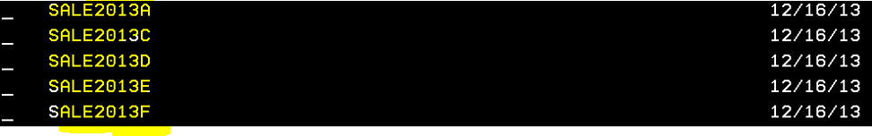
Copy Queries to New Tax /Exemption Year
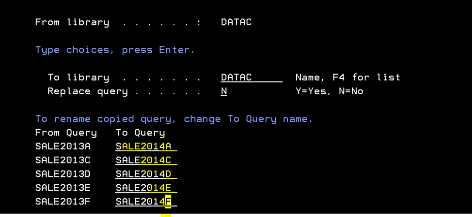
Run SALE2014A now (6/3/14), then re-run all files by December before mailing
Build files for AS400 menu (option #29)
Ran on 11/10/2015 as test file, re-run when BOT creates 2015 HOMOWNMST file
Have SYSTEMS (STEVE) upload file from SALESADJ01

Change to 2014 for 2014 Tax year
Build 10 year sales history


After SALES10Y17 re-run SALES10Y6, -7, -10 and -11
Creating properties where age = 10 or greater

For long-time mailing

Run when preparing to mail LT
Early No_file

Look at write-up for No-File (contact Kathy Lee)
2.2. Create 10 year age property file
- This is used to calculate means-tested percentage exemptions
Query Basis: has the taxpayer received the homestead exemption for at least nine consecutive years OR previously received a long-term exemption?
Query syntax
- IF CURRENT TAX YEAR =TRI YEAR, THEN AGE =10
- IF CURRENT TAX YEAR =TRI YEAR-1, THEN AGE=9
- IF CURRENT TAX YEAR =TRI YEAR-2, THEN AGE =8
- Library
DATAC
| AS400 Query |
Result |
Output File |
| DTLAGE_CY |
CITY PINS (CURRENT TRI YEAR, AGE=10) |
DTLAGE/DATAC |
| DTLAGE_NW |
NORTHWEST PINS (TRI WAS TWO YEARS AGO, AGE=8) |
DTLAGE/DATAC |
| DTLAGE_SW |
SOUTHWEST PINS (TRI WAS ONE YEAR AGO, AGE=9) |
DTLAGE/DATAC |
| LTOWN01 |
CHANGE MEMBER YEAR TO CURRENT ON OUTPUT FILE |
LTOWN01 |
| LTOWN02 |
ELIMINATES DUPLICATES |
LTOWN02 |
Known by the names:
- Long-time Homeowner Exemption
- Long Term Occupant Exemption
- LT4 (Long-term 4%; income < $75,000)
- LT2 (Long-term 2%, income $75,000 - $100,000)
- LT7 (Better than Senior Freeze)
Process in AS400
Create Database
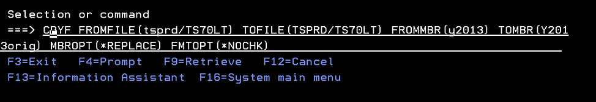
- run
tslstbuil1/datac

Calculate LT4 & LT2 Exemptions:
- New queries: Run PRORAT3 and PRORAT4 BEFORE FOLLOWING QUERIES


- Run CHK297_02 AS FILE AND REPORT

- Run following query after LNGTM20 and before LNGTM21


- Give Lumni following reports (‘R’ for report, ‘F’ to create file):

- Wait for approval before uploading ASREA86X (LNGTM90/DATAC) file
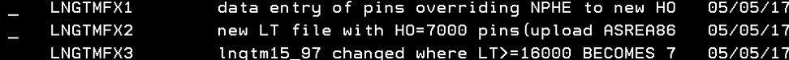
- Wait for approval before uploading ASREA86X (LNGTMFX2/DATAC) file
- Old queries: change years and State Equalizer


- Give Lumni reports:
- 1423
- 1431
- 1432
- 1496
- Wait for approval before uploading ASREA86X (LNGTM1430/DATAC) file

- Wait for approval before uploading ASREA86X (LNGTM14_90/DATAC) file
- To ‘fix’ PIN’s whose LT should equal 7000, run following queries (data entry of pins in both queries (FX1 to assign 7000, FX2 to include remaining LT PIN’s):

- MISC QUERIES
Calculate LT7 Exemptions
- Files Needed:
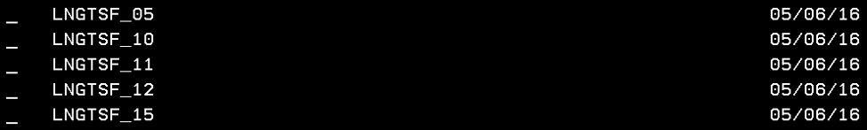

- GIVE LUMNI the following reports:
- Once approved, run ASREA86X
- Sndnetf following file:

- ASHMA82V
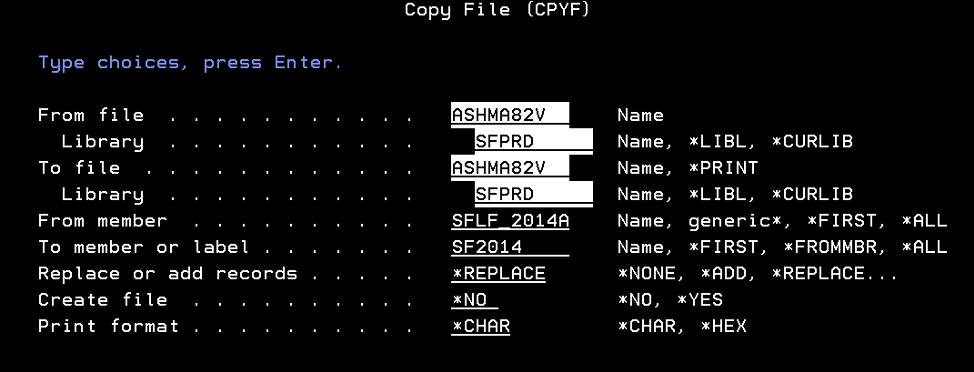


2.3. Update ‘HOMEOWNER NO FILE’
- Mainframe Data Filename:
A.AS.HMA.NOFILE15-NOFILE15-MF-050616.txt
- TPI gets Senior Lexus/Nexus ‘NO’ file PINs & uploads to Homeowner NO-FILE
- Upload can be run multiple times during year
- Change JCL for new year (one time)
 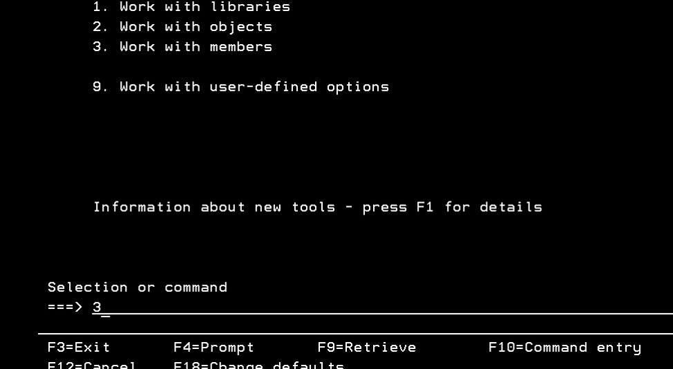
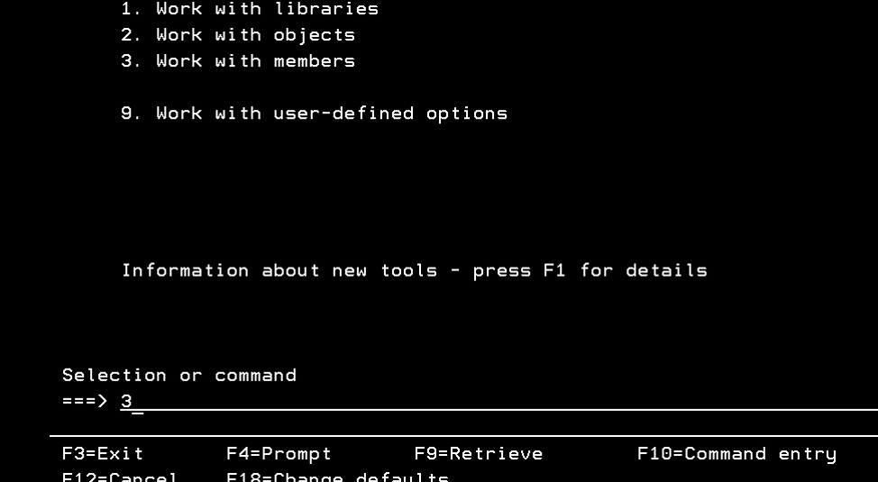
 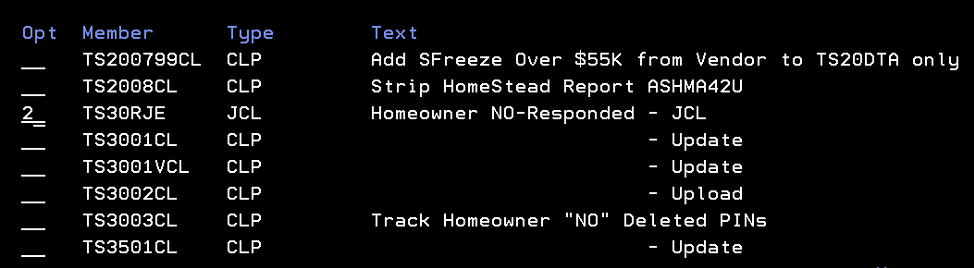
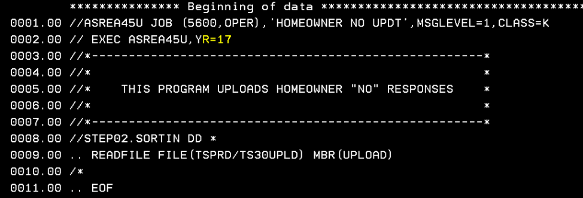
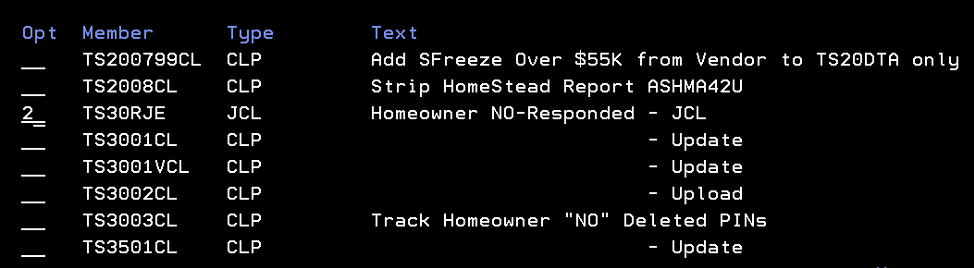
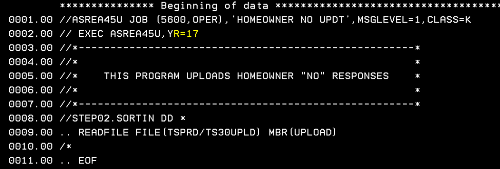
 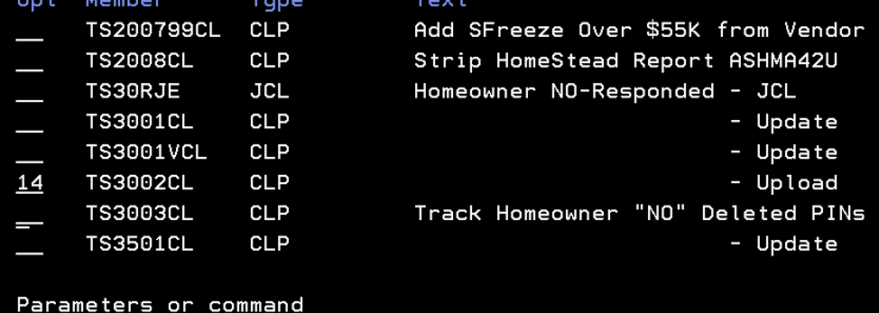
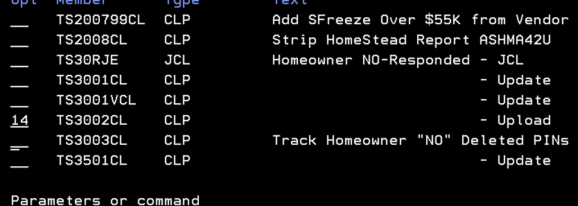

- During MIS processing, only run when requested by BOT (after SF processing and before 7%)
- Make sure no one is on the AS400 “no-file” prior to running following jobs
 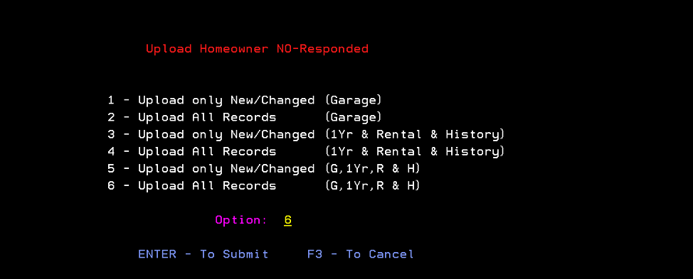
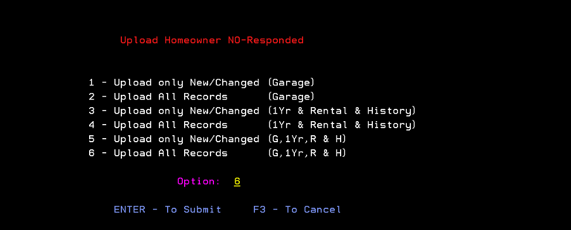
- Screenprint counts
- Produces
ASREA45U job (check JHS)
 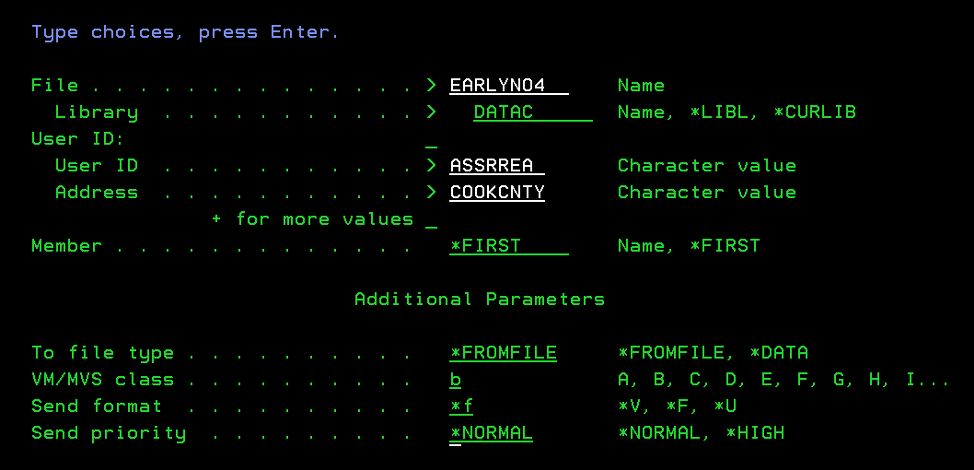
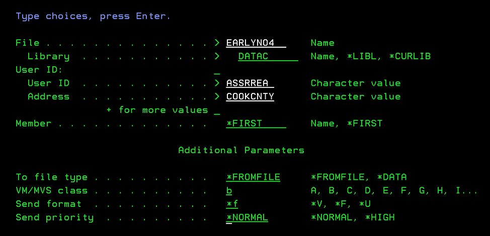
2.4. Mainframe generates Mailing Files
2.5. Systems FTPs mailing text file to vendor (see 2.4 details)
2.6. Create Senior Reminder mailing file
- Run only
SRREMIND5 and send file to Vendor (SRREMIND5/DATAC)
- Run
SRREMIND5, 5A and 5B if requested by TPI to not include prior year batch=4. Send file to vendor (SRREMIND5B/DATAC).

3. Mail Exemption Notifications
| Departments Involved |
Programs &
Technology Employed |
| Taxpayer Information (TPI) |
|
| ADLAXX (Vendor) |
|
| Communications |
|
Description
Taxpayers are mailed information about the exemptions for which they may qualify.
The information sent is dependent on the data TPI has about each taxpayer.
Details
3.1. Communications department sends mailer designs to vendor
3.2. Vendor assigns barcode to property index numbers
- Barcode scanning allows for easy data entry, matching PIN to application
- Not all applications are returned to vendor, so TPI must be able to handle the ones that arrive
- Vendor and TPI coodinate to test barcode system
3.3. Vendor mails notifications
- This process is outsourced because it is unskilled-labor intensive.
- Vendor uses mailing files generated in previous subprocess to determine which mailers go to which addresses.
- Garbage in, garbage out: the vendor does not parse the list beyond what is given to them.
- Mailing file sent to vendor includes:
- PIN
- Taxpayer birth date
- Type of property
- Address
3.4. Determination of mailer is different in 2020 due to automatic renewal of Senior Exemption.
Decision Tree Effective 2020 (tax year 2019)

Deprecated Decision Tree (2019/tax year 2018 and earlier)
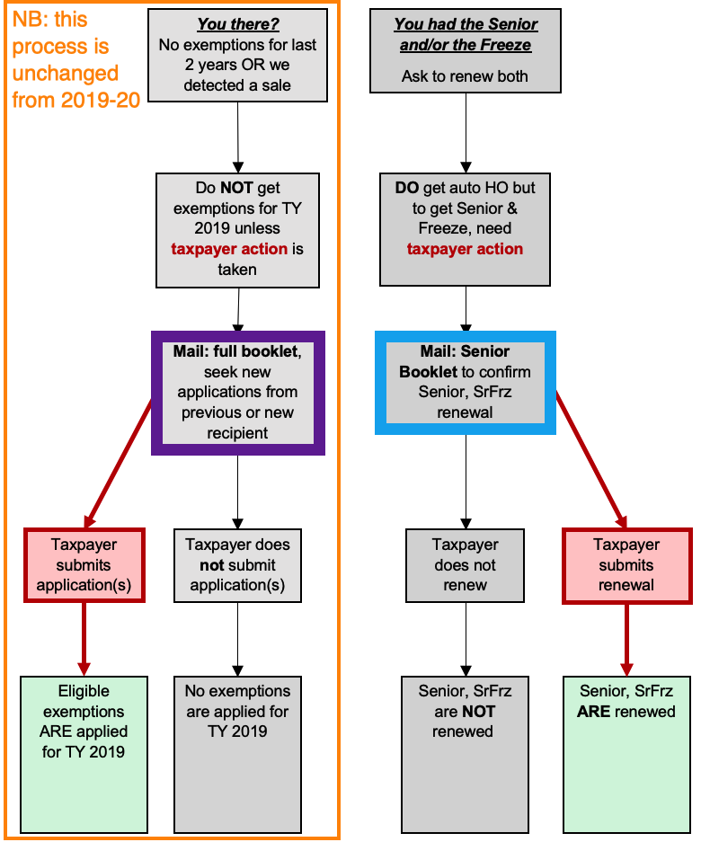
4. Application Intake
| Departments Involved |
Programs &
Technology Employed |
| Taxpayer Information (TPI) |
Mainframe |
| ADLAXX (Vendor) |
AS400 |
| Legal: Freedom of Information (FOIA) |
Microsoft Excel |
Description
Applications for exemptions are received from several channels.
Details
4.1. Most applicactions are submitted as hard copies.
- The ability to file online is new in 2020; this is now available for the so-called “Big Three” Exemptions.
- Each electronic application is available from the relevant subpage of the CCAO website. All e-File submissions are completed through DocuSign.
- These exemptions may be submitted either online or on paper:
- These exemptions may be submitted only on paper:
4.2. Most applicactions are mailed to the Vendor’s Post Office Box
- Property Owners seeking exemptions use the provided return envelope, which has a PO Box return address for vendor.
- Vendor keys data onto excel file
- Vendor sorts types of applications (vendor disallows longtime homeowner applications with income exceeding $100k)
- Vendor emails final Excel files to TPI
- TPI sends Excel files to Systems
- Systems loads the excel files to the AS400
4.3. Some applicactions come directly to CCAO
- This happens mainly because property owner does not want to send the application to a PO Box in a different county (where vendor is located).
- Enough arrive during peak to keep several staff opening mail full time
- TPI receives direct in-person applications from the taxpayer themselves on Third Floor.
- Freedom of Information Department receives agent applications.
- These are from professionals who file them on behalf of clients
- FOI serves as buffer between professionals within TPI.
- TPI deals only with principals, not agents.
- FOI timestamps applications as recieved and delivers daily batches to TPI who process as normal.
4.4. Internal Early Processing
5. Verification of Eligibility
| Departments Involved |
Programs &
Technology Employed |
| Taxpayer Information (TPI) |
Mainframe |
| Legacy Systems |
AS400 |
| Legal: Counsel |
DocuSign |
Description
All exemptions have eligibility requirements; TPI and satellite offices verify taxpayers qualify and record documentation.
Details
5.1. Verification Process Abstract
In general, the process flow is as follows:
- Internal interface process with mainframe using Homestead Update Display (HUPD) or AS400 executed by TPI, depending on applications
- Prime applications are the only ones keyed into the mainframe
- All others are processed via the AS400
- Legacy Systems process intake from AS400 and batches into mainframe.
- Information gathered is verified against the Master File
- AS400 information translated into mainframe by BOT.
The following is a brief comparison of the seven major exemption types

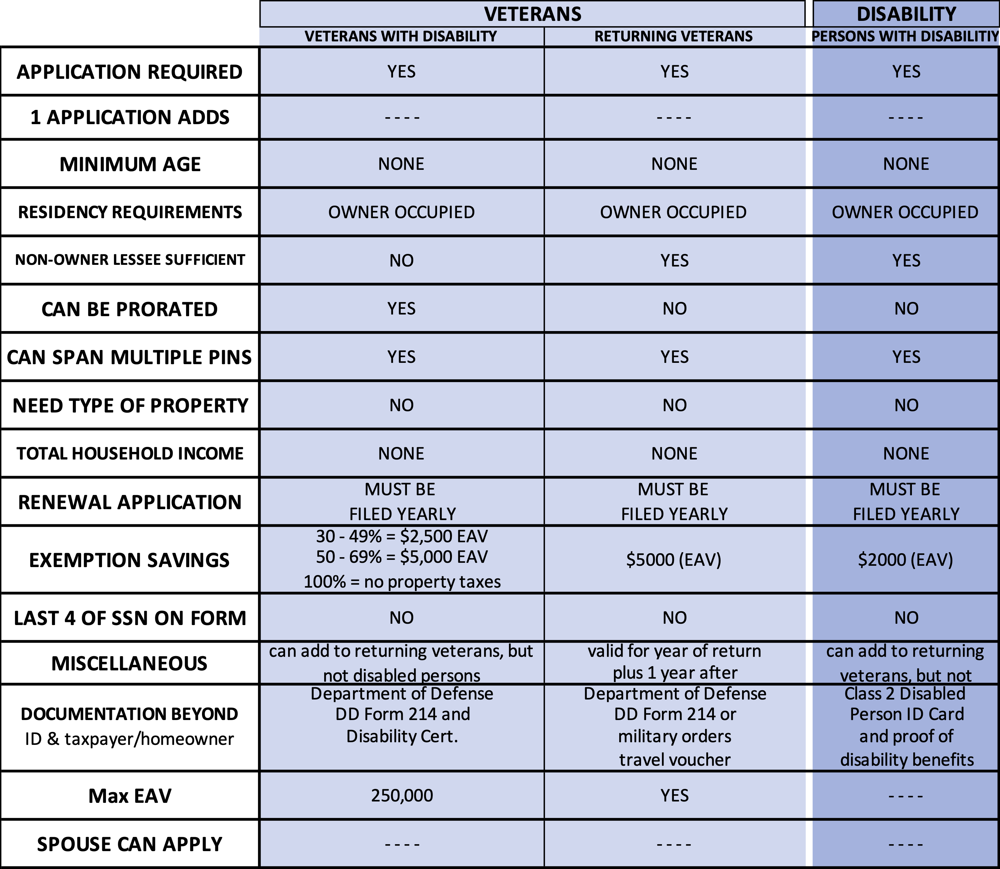
5.2. Homestead / Senior Exemption
- Determine type of senior application – first time or renewal
- Senior renewals are processed automatically
- Senior First Time filer are the only ones keyed into the mainframe
- TPI validates requirements: applicants must meet the following
- Age = 65+ (e.g. via driver’s license)
- Proof of residence
- TPI staff member keys info into Homestead Update Display (HUPD) which interfaces with mainframe
- Is PIN already in system?
- Exemption already in the system. The Mainframe does not allow new entry
- Is the exemption a renewal (homestead only)?
- HD keys PIN and Birthday into AS400
- Birth date is the validation on co-ops because co-ops have multiple owners for one PIN.
- If it is a co-op, the system recognizes the PIN and prompts user to enter a birth date.
- It will not renew if the PIN was not keyed in last year. Process as new application.
5.3. Senior Freeze
- Compared to first time Senior File which is captured directly onto the MF, all other applications are captured on the AS400
- TPI validates requirements. Applicant must meet the following:
- Age = 65+ (e.g. via driver’s license)
- Proof of income = less than $55,000 per year
- Proof of residence (must reside in the property) for two consecutive January 1
- System automatically assigns income of $54,999.00 for all vendor PIN numbers, because the vendor validates but does not enter the income.
- If the system raises an error
- AS400 appends application with error code
- These are investigated by TPI later
5.4. Longtime Homeowner
- Verify: is the applicant a Disabled Person, Disabled Veteran, or Returning Veteran?
- TPI validates requirements. Applicant must meet the following:
- Property owner must have lived in the property more than 10 years
- Income = $100,000 or less
- Property has gone up in value significantly
- TPI staff verify income: only two categories are eligible.
- Income level of $75,000 or less = 7% increase modification
- Income level $75,000.01 to $100,000 = 10% increase modification
- AS400 applies income values; system automatically assigns income of:
- $1 to $75,000.00 - system automatically populates $74,999
- $75,000.01 to $100,000.00 - system automatically populates $99,999.00
- AS400 appends exemption amount based on income
5.4. Disabled Person, Returning Veteran, Disabled Veteran
- Verify: is the applicant a Disabled Person, Disabled Veteran, or Returning Veteran?
- TPI validates requirements.
- Disabled Person applicants must display one of the following documents:
- Verification letter from Social Security Office
- Verification letter from Doctor
- Verification letter from Railroad
- Disabled Veteran applicants must display both of the following documents:
- Discharge papers (Form
DD2 14)
- Verification letter from the VA
- Returning Veteran applicants must display discharge papers (Form
DD2 14)
5.6. Online applications
- Systems downloads file from internet application
- Systems uploads the file directly to the AS400
5.7. Senior Reminders
- Systems runs AS400 query to identify “no returns,” the taxpayers who were sent notifications but have not yet submitted
- Systems generates the reminders file on AS400
- Systems FTPs “reminders” mailing file to vendor
- Same process as initial mailing is followed
6. Technical Finalization
| Departments Involved |
Programs &
Technology Employed |
| Bureau of Technology (BOT) |
Mainframe |
| Taxpayer Information (TPI) |
AS400 |
| Legacy Systems |
Printers |
Description
All temporary files are transferred to the Property tax System of Record.
Details
6.1. Assessor starts consolidation of all exemptions
- BOT runs jobs 1 to 29 of the BOT MF Procedures
- Systems uploads updated/returned vendor files to AS400
- Systems runs AS400 batch jobs to MF
- This step updates the exemption file that is ready to be processed by BOT
- AS400 uploads file to mainframe
- BOT triggers MF jobs
6.3. Quality Assurance Analysis
- MF validates accuracy
- Does a lookup for values in the MF table file.
- The MF has ~ 10 tables (or “TBs”), one for each exemption type
- BOT provides QA Report (File download from MF)
- Systems conducts manual QA
- Error checking with standard queries to make sure the files run correctly
- keep adding jobs to mitigate newly identified issues
- If new applications are received during this process:
- TPI directly enters all applications on to the MF
- Systems repeats consolidation steps
6.3. Close of Exemptions for Tax Year
- Systems reviews file one last time
- TPI and systems verify all exemptions and calculations
- IDOR issues State Equalizer
- Systems calculates exemption amounts
- TPI notifies Clerk to proceed with tax processing
7. Interagency Resolution
| Departments Involved |
Programs &
Technology Employed |
| Bureau of Technology (BOT) |
Mainframe |
| Taxpayer Information (TPI) |
AS400 |
| Legacy Systems |
Printers |
| Cook County Clerk |
Clerk’s Mainframe Interface |
Description
Teams from the County Clerk and the CCAO meet to discuss the results of this calculation and make adjustments as necessary to ameliorate discrepancies between their records systems.
Details
7.1 The Clerk reviews all exemption calculations in relation to prior year
7.2 Clerk and Assessor meet to discuss results
7.3 Changes to Equalized Assessed Values are Calculated
- Senior = $5,000
- Senor Freeze (income <$55K) = varies by value of home
- Returning Veteran = $5,000
- Disabled Veteran
- 30% to 49% = $2,500
- 50% to 69% = $2,500
- 70% or more = exempt up to 250,000 EAV
- Disabled Veteran Home Improvement = $70,000 AV
- Homeowner = $7,000
- Long-time Occupant exemption calculation:
- <$75k, base year X 1.07 = exemption
- >$75K to 100k, base year X 1.10 = exemption
- From above, is 7% better? Give 7%
##### While this work is performed, the County Clerk runs New Property jobs and TIF Jobs (in this order).
7.4 Assessor makes changes based on results of conference.
- Changes must be coordinated with the County Clerk.
- The assessor cannot make changes without County Clerk’s collaboration.
- Changes are handled by Legacy Systems in tandem with BOT
7.5 All Exemptions are accepted, CCAO Process Ends
- MF applies final calculation to the 2nd Installment tax bill
- Clerk Notifies the TR to proceed with Tax processing (print the tax bills)
- Did tax payer receive all entitled exemption?
- If Yes: end of process.
- If No:
- Property owners must file Certificate of Error to receive an exemption.
- If exemptions applications are received after the system is closed, TPI automatically converts them to a Certificate of Error
- Filing a Cerficate of Error results in a higher initial tax bill that is offset by a refund issued at a later date.
8. Erroneous Investigation
| Departments Involved |
Programs &
Technology Employed |
| Legal |
Docketing Software |
Description
Subunit within the Legal Department investigates potentially unqualified exemptions and uses a variety of means to recoup the revenues lost.
Summary of Investigation Results
| Year |
Cases |
Pins |
Re-bills |
No Action |
| 2014 |
2,300 |
11,603 |
2,718 |
|
| 2015 |
2,800 |
17,046 |
2,559 |
1,190 |
| 2016 |
3,426 |
20,470 |
2,426 |
1,905 |
| 2017 |
5,884 |
26,221 |
3,524 |
2,989 |
| 2018 |
5,272 |
26,155 |
2,830 |
3,739 |
| 2019 |
4,136 |
27,910 |
2,708 |
2,023 |
| Totals |
23,818 |
129,405 |
16,765 |
11,846 |
Details
8.1. Investigators generate leads regarding possible statutory violations.
- Leads come from a variety of sources and report in a variety of manners.
Customer Service (Phone Calls)
- Answer phones in a polite and professional manner
- Some calls may need to be redirected to other departments. Transfer call or advise caller on the correct department
- When taking complaints regarding possible violators gather as much information as possible:
- Name of caller
- Ask caller if they are willing to be contacted by a member of the Investigations Unit
- Address of erroneous exemption and other properties if any
- Pin. #’s if possible
- Caller may wish to remain anonymous. Be polite and take all information caller gives
- Open file by creating docket number and time stamp. Place all information in file for delivery to Investigations Unit for analysis
Customer Service (Walk INS)
- Taxpayers may come into the office to notify us about a potential violator.
- Ask Taxpayer to complete an Exemption Inquiry Form (They can remain anonymous if they wish)
- Ask Taxpayer if they are willing to be contacted by a member of the Investigations Unit in the future if follow up questions are required
- Open file by creating docket number and time stamp. Place all information in file for delivery to Investigations Unit for analysis
Customer Service (E-mail)
- E-mail correspondence filters through the Communications Department
- All E-mails concerning potential violators will be forwarded to the Investigations Unit
- E-mail is read and taxpayer making complaint is contacted if possible
- Ask Taxpayer any required follow up questions (They can remain anonymous if they wish)
- Open file by creating docket number and time stamp. Place all information in file for delivery to Investigations Unit for analysis
Customer Service (Mail INS): Investigations Unit
- All Mail concerning potential violators will be forwarded to the Investigations Unit
- Mail is opened and read
- Taxpayer making complaint is contacted if possible
- Ask Taxpayer if they are willing to be contacted by a member of the Investigations Unit in the future if follow up questions are required (They can remain anonymous if they wish)
- Open file by creating docket number and time stamp. Place all information in file for delivery to Investigations Unit for analysis
Nexus Lexus: External Vendor
- Specifically tasked with identifying possible violators
- Leads are sent directly to 3rd Floor Investigation Unit
8.2. Investigation is opened and docket is processed
- Enter data in computer to assign a Docket Number
- Create label containing Pin. #’s, owner’s name, Erroneous Exemptions, Billing Address Etc.
- Print out label and affix to Docket Jacket (Note: docket jacket is a long red envelope)
- Data printed out and placed in Docket Jacket
- Dockets sorted into bundles (number to be determined)
- Bundles placed on cart and delivered to Deputy of Investigations, 9th FL.
8.3. Docket is assigned to investigation team
The first phase of the investigation is completed without leaving the building
- Bundles distributed to investigators
- Identify who has exemptions what type and for how long
- Identify any and all Pin. #’s and exemptions associated with docket number
- Use all data supplied by vendor as well as, all data bases available to verify violations
- Data bases available, Lexus Nexus and the AS400 and Mainframe
- Prepare docket to be sent down to the 3rd FL. to be billed or send to field for further investigating
- Prepare in-house dockets in a step by step manner to send to 3rd FL. for processing
- All Docket files are to be approved by chief of investigations.
8.4. Investigators conduct field research if necessary
This is expensive and time-consuming, only undertaken if cost-effective
- Identify current occupants
- Establish length of residency
- Determine renter or owner
- Interview neighbors, delivery people and utility workers in area. If a condo, interview doorman and association manager to help verify rental or owner-occupied, check name on mail boxes, etc.
- Compile all findings and evidence in an easy to follow manner
- Review all evidence for accurate time lines and residency factors
- Return completed docket on time and complete
- Be prepared to defend findings at hearing
- Prepare and return dockets to 3rd FL. for further processing/billing
8.5. Investigation yields finding of violation
- CCAO is empowered by statute to place lien on property for amount of back tax owed
- They are further entitled to collect the interest generated on the taxes in arrears after the lien is placed
Finding is recorded in agencywide exemption processing system
- All files from Investigations returned to 3rd FL. for processing
- All properties found to be rentals will be entered into the No File in order to prevent future exemptions from being taken
- Erroneous Exemptions will be entered into the Treasurer’s APIN File
- Each Erroneous Exemption will be entered into the C.C.A.O. Erroneous Exemption System
- A bill for each Erroneous Exemption will be created
- Bills placed in Billing Envelopes with Return Envelopes
- Envelopes placed in trays for pick up and mailing
- Tax bill to recoup amount along with notice of legal action is mailed to violator
- Often, the lien and potential for interest is enough to encourage prompt payment
Payments are sent directly to the Investigation Unit
- Incoming Payments (Mail In):
- Received by Erroneous Exemption Unit and letter opened
- Payment amounts are verified for correct amount and entered into system
- Checks are scanned and enter into ledger
- Incorrect payments are returned to Taxpayer with letter of explanation
- Checks walked down to Treasurer’s Office for processing daily
- Incoming Payment (Walk Ins):
- All walk in payments handled at front counter on 3rd FL.
- Follow steps B through D in Incoming Payments (Mail In)
- No incorrect or partial payments are to be accepted
- After checks are scanned and an electronic record is made, all checks not taken to Treasurer that day should be secured for safe keeping
8.6. Alleged violator may dispute finding
- Statute affords due process for contested finding of violation
- Administrative hearings are scheduled that take place biweekly in county building
- Capacity to administer these is limited; potential for less than thirty per month
- In seven years and over a thousand hearings, CCAO has not lost a single contested case
- Often, negotiations with defendents and their representation result in settlements prior to hearing
Investigation Unit Job Descriptions
 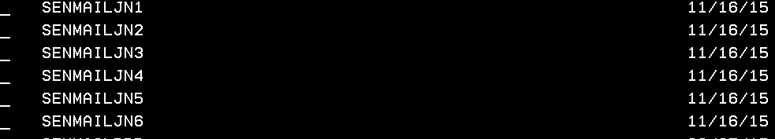
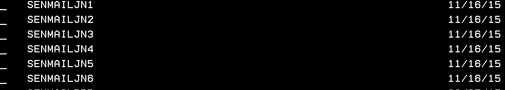


 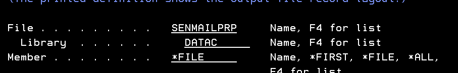
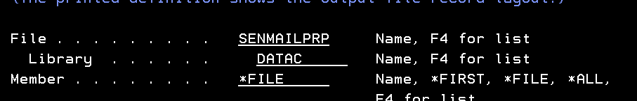


 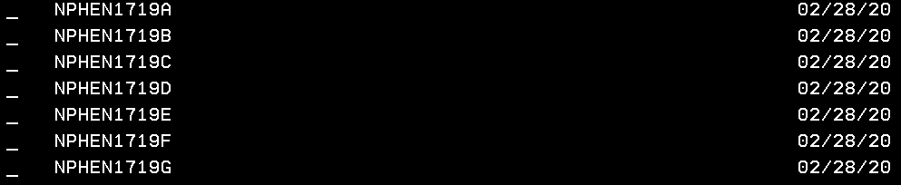
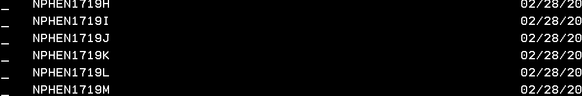
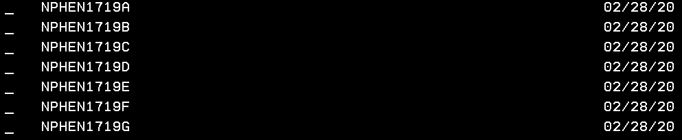
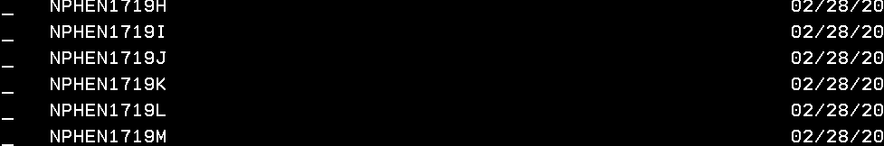
 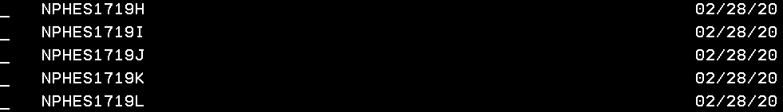
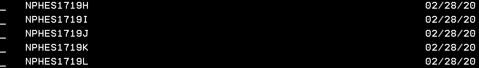


 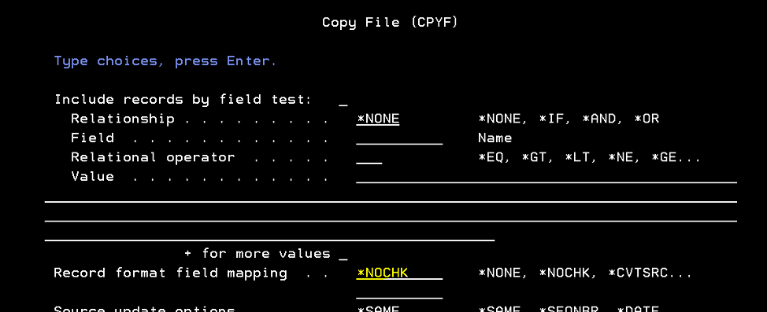
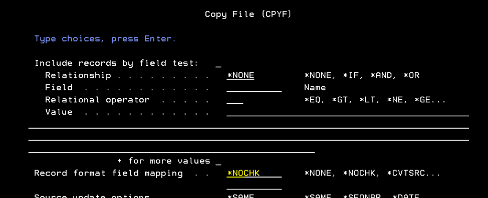